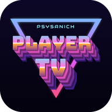
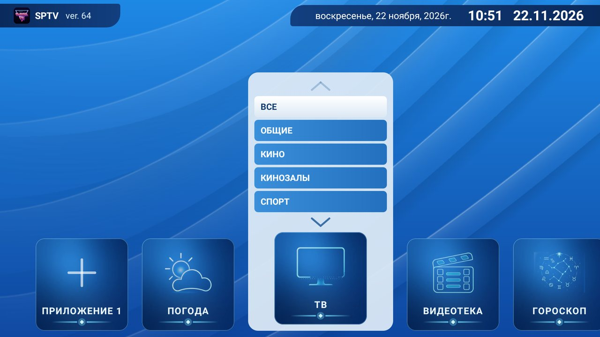
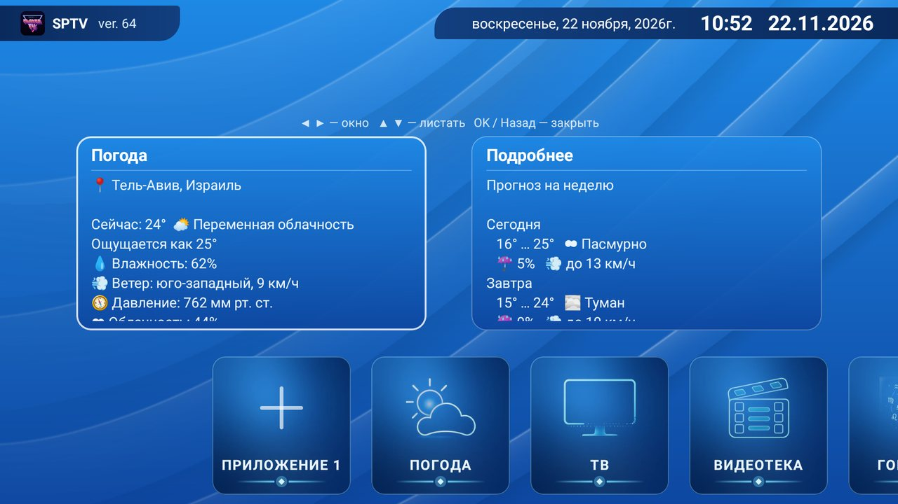
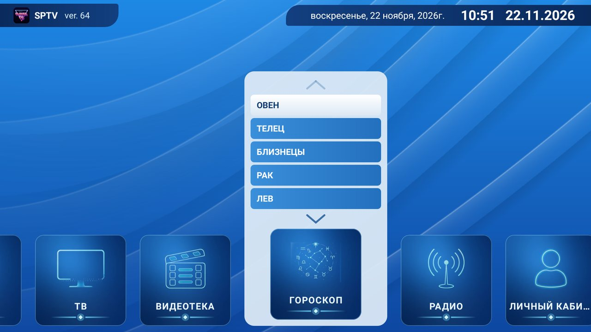
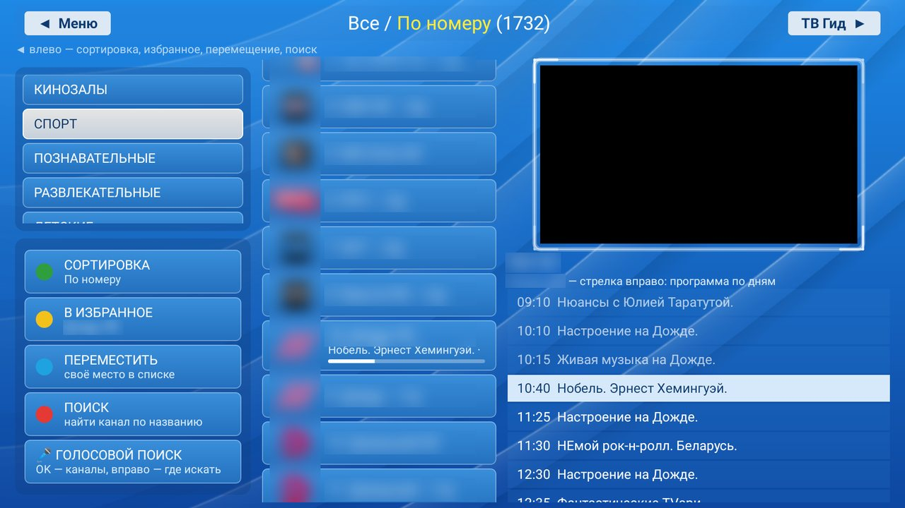
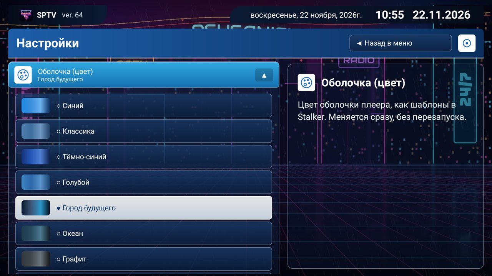
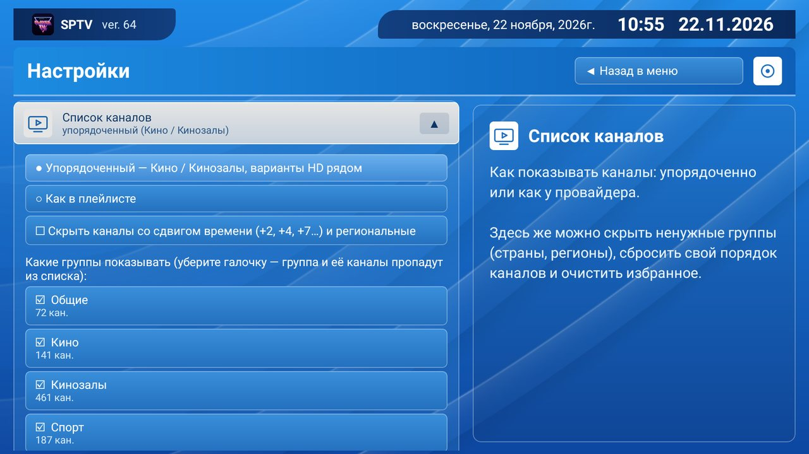
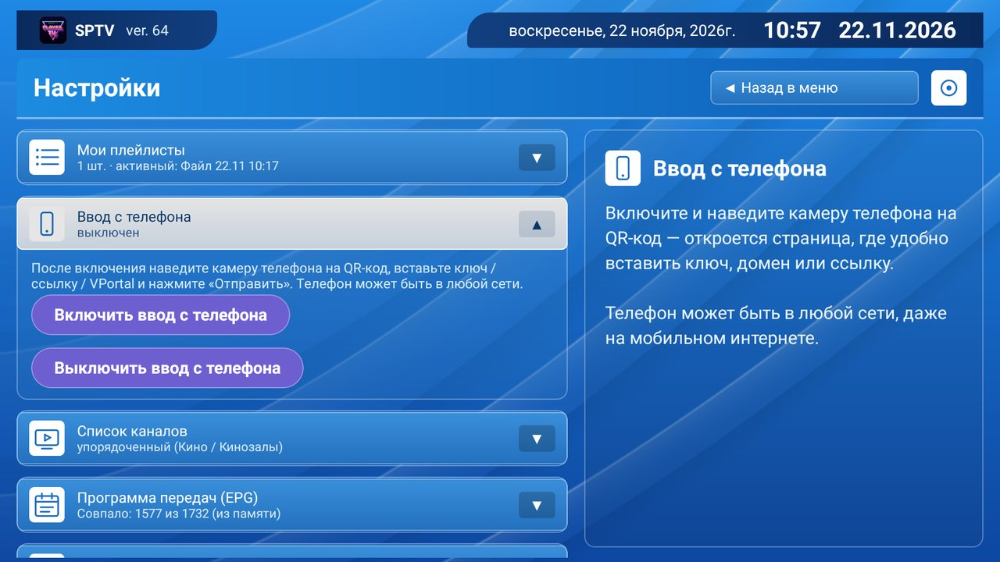

Телевидение
- Плейлисты M3U / M3U8 по ссылке или из файла
- Логотипы, группы, номера каналов
- Программа передач (EPG) и архив по дням
- Избранное, сортировка, свой порядок каналов, поиск
- Скрытие ненужных групп и стран

PSYSANICHСмотрите свои IPTV-каналы в привычном интерфейсе в стиле Stalker. Крупно, понятно, управляется пультом.












Логотипы и названия каналов на снимках размыты: каналы зависят от вашего плейлиста.
SPTV — только плеер. В нём нет встроенных каналов, фильмов или плейлистов. Вы добавляете свои источники, например плейлист от вашего провайдера, и отвечаете за законность их использования.